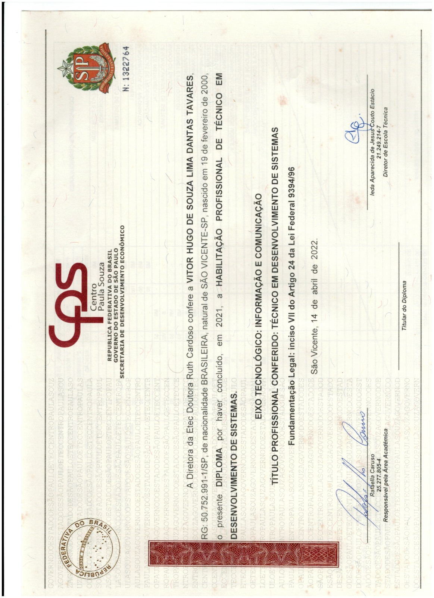
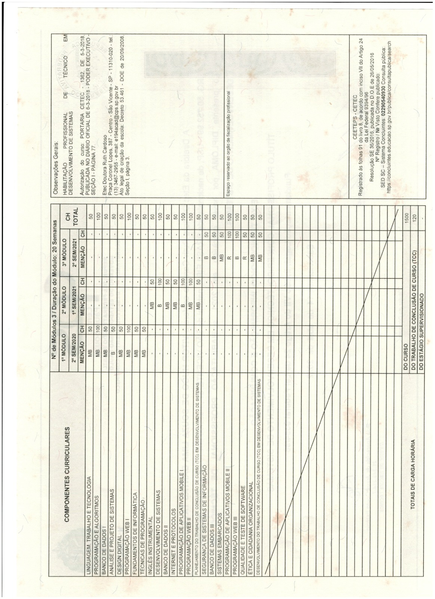

Diploma
Técnico em Desenvolvimento de Sistemas
- Titular
- Vitor Hugo de Souza Lima Dantas Tavares
- Instituição
- Etec Doutora Ruth Cardoso – Centro Paula Souza
- Eixo
- Informação e Comunicação
- Conclusão
- 2021 · 1.500 h de curso + 120 h de TCC

